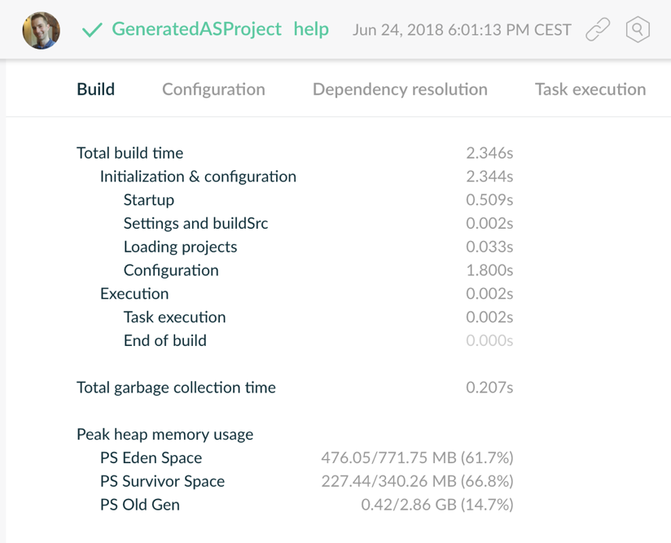
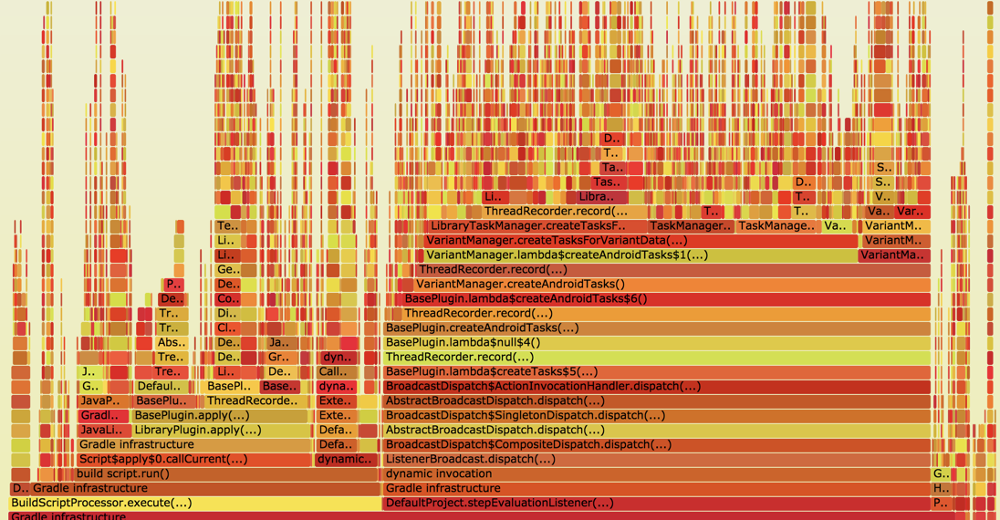
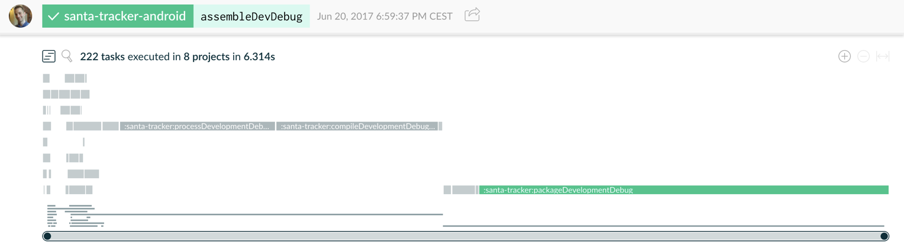
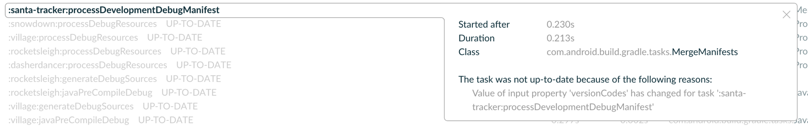
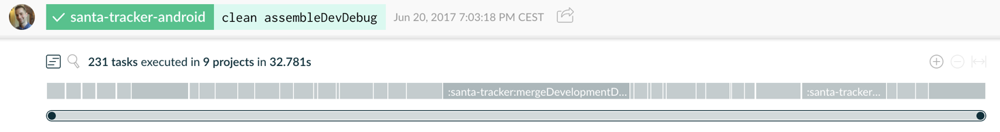
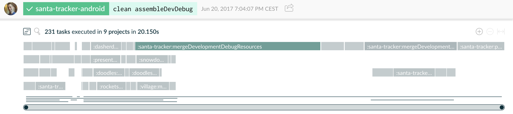
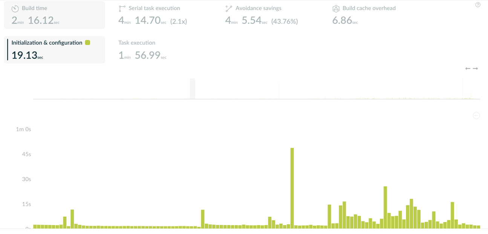

Gradle Build Tool
Pièges et bonnes pratiques
Paul Merlin (@eskat0s) - Gradle Inc.
Qui suis-je ?
speaker {
name = "Paul Merlin"
company = "Gradle Inc."
locations = setOf("Montpellier, France", "Cevennes <3")
oss = "Apache Polygene PMC, former chair"
successes = listOf(
"BASIC 'Hello, World!' in 1986",
"C 'Hello, World!' in 1989",
"Java 'Hello, World!' in 1996"
"Kotlin 'Hello, World!' in 2015",
"tools", "daemons", "apps", "frameworks", "libs"
),
failures = generateSequence(code) { bugs },
twitter = "@eskat0s",
github = "eskatos"
}Qui êtes-vous ?
Qui construit pour la JVM ?
Qui construit pour les VM JavaScript ?
Qui construit du natif ?
Autre chose ? Quoi ?
Qui se sert uniquement de Gradle au boulot ?
Qui se sert uniquement de Maven au boulot ?
Qui se sert des deux au boulot ?
Qui se sert d’autres outils de build ? lesquels ?
Qui a déjà modifié/écrit un build Gradle ?
Agenda
Gradle, c’est quoi ?
Comment on s’en sert ?
Basique!
En pratique
Organiser la logique de build
Des builds performants
Maintenir et faire évoluer des builds
Intégration continue
Gradle, c’est quoi ?
Gradle, c’est quoi ?
Gradle est un outil de construction et d’automatisation.
Gradle Build Tool
Tourne sur une JVM
Implémenté en Java
Apache License 2.0
Agnostique de l’écosystème
Écosystème JVM
Java, Kotlin, Groovy, Scala, Clojure …
Écosystème natif
C, C++, Swift, …
Android
Et bien d’autres
JavaScript, Python, Go, Rust, Asciidoctor, Docker …
Gradle en quelques chiffres
>7.0M téléchargements par mois
35+ ingénieurs Gradle
300K constructions par semaine @LinkedIn
Gradle Inc.
La compagnie derrière Gradle.
"Build Happiness"
Emploie des ingénieurs à plein temps
Produit aussi Gradle Enterprise
(Gradle consulting, support, service etc.)
(Training: online, public and in-house)
Gradle Enterprise
Produit commercial - Productivité des développeurs
Build Scans
enregistrement persistent et partageable
de ce qui s’est passé pendant un build
Build Cache
réutilisation des outputs de build
Installation sur site, cache distribué, historique des constructions, dashboards, export API etc…
Gradle Enterprise

Build Scans gratuits en SaaS
Déjà utilisé par plein de projets open-source
gradle --scan
Et le Build Cache ?
Le Build Cache local est intégré à Gradle en Open Source
Image docker d’un noeud de service Build Cache, non distribué
Gradle recrute!
Une équipe de développement totalement distribuée
Un projet intéressant utilisé par des millions
Des positions dans l’équipe Build Tool et Gradle Enterprise
Si ce qui suit est un problème intéressant à résoudre à vos yeux,
ou parlez moi à la pause :-)
Comment se sert-on de Gradle ?
en ligne de commande
en intégration continue
depuis un IDE
via une API
gradle build
Gradle est avant tout un outil en ligne de commande
USAGE: gradle [option…] [task…]Un client qui démarre et réutilise un démon
performance: JVM JIT & caches mémoire
Un wrapper enregistré dans le dépôt de sources
Version de l’outil de construction fixée
Pas besoin d’installation, seulement d’une JVM
git clone foo && cd foo && ./gradlew build
Intégration Continue
Les services d’intégration continue executent Gradle, tout simplement. Certains d’entre eux fournissent des fonctionnalités supplémentaires en consommant les résulats de construction:
sortie console,
résultats d’execution de tests (xUnit, coverage etc..),
URL du Build Scan,
etc …
IDE ⇒ Gradle
Certains IDEs supportent Gradle nativement
On importe un build Gradle directement dans l’IDE
IntelliJ IDEA, CLion, Eclipse, Netbeans
mais aussi les Language Servers (LSP)
L’IDE interroge Gradle pour obtenir le modèle du build
les sets de sources, leurs dépendances etc..
les tâches disponibles
la configuration de l’IDE
Gradle ⇒ IDE
Pour d’autres IDE qui ne fonctionnent qu’à partir de fichiers de configuration, Gradle peut générer ceux-ci.
IntelliJ IDEA et Eclipse (déprécié en faveur de l’import)
Visual Studio
XCode
Le build configure l’IDE
Dans tous les cas, l’objectif est de configurer l’IDE
depuis le build
depuis le dépôt de sources
pour tout le monde pareil
sans configuration manuelle
Tooling API
Il est également possible de piloter Gradle via une api, la Tooling API.
C’est ce que les IDE permettant l’import de builds Gradle utilisent.
Gradle, les bases
Gradle, les bases
Scripts de build en Kotlin et Groovy
Configuration et execution de tâches
Résolution de dépendances
Éviter le répéter travail

Gradle Plugins
Core Plugins (
java,jacoco,maven-publish…)Community Plugins (
kotlin,android,golang,docker,asciidoctor…)
Gradle Plugins
Des plugins Gradle contribuent
des tâches configurables et réutilisables
des extensions Gradle configurables
Gradle Plugins
Des plugins Gradle contribuent un modèle à configurer
dans les scripts de build
en utilisant un DSL
Une librairie Java
plugins {
`java-library`
}
dependencies {
api("com.acme:foo:1.0")
implementation("com.zoo:monkey:1.1")
}
tasks.withType<JavaCompile> {
// ...
}Une application C++
plugins {
`cpp-application`
}
application {
baseName = "my-app"
}
toolChains {
// ...
}Éviter de répéter le travail
Unités de travail: tâches, transformations
@Input*@Output*UP_TO_DATE- Build IncrémentalLes inputs n’ont pas changé, les outputs sont présents et inchangés
FROM_CACHE- Build CacheLes inputs n’ont pas changé, les outputs ont été rapatrié depuis le cache
En pratique
En pratique
Hello, Gradle World!
Un petit build
Un gros build
Plein de builds
Créer un nouveau build
Avec Gradle installé
gradle init
Depuis une interface Web
gradle init
Un petit build
Un petit build
Un seul projet
Les plugins contribuent un modèle qui se configure via le DSL
Configuration vs. Execution
Configuration vs. Execution

Un gros build
Un gros build
Multi-projets
3 dans notre exemple
10 à 100, raisonnable et fréquent
500 et plus, moins fréquent mais ça existe
Hiérachie de projets
Configuration
Configurer les sous-projets
Plein de builds
Plein de builds
Séparer un gros build en plusieurs petits
Différentes équipes, cycle de livraison différent etc…
Mono-repo vs. Multi-repo
Plein de builds
Plein de builds
Settings
Composite Builds - Included Builds
Fini les
-SNAPSHOTS!Utiles aussi pour travailler sur des librairies externes
Augmente/Limite le scope disponible dans l’IDE
Source Dependencies
Dépendre d’un dépôt git distant
Librairie ou fix non publié
Sources non modifiables
En pratique
Pas de logique de build commune
Pas de réutilisation
Comment organiser sa logique de build ?
Organiser la logique de build
Organiser la logique de build
organiser la logique de build
un build, une hierarchie de projets
settings
buildSrc
init scripts
extraire une convention
vers le projet racine
vers un plugin dans buildSrc
modeler le DSL (extension & configuration de tâches)
tester la logique de build
buildSrc
ProjectBuilder / TestKit
partager la logique de build
extraire dans un autre build
publier
composite builds
mono-repo vs. multi-repo
mono-build vs. multi-builds
included build
included build logic
Interlude
Pfiouuuuu
Pfiouuuuu
Mais, j’ai déjà assez à faire avec le code de production! et c’est sans compter les tests unitaires, d’intégration, fonctionnels, bariolés …
OUI … MAIS
Qui doit s’occuper du build ?
Qui se sert du build ?
Tout le monde
@dev,@ide,@ci,@qa,@opsetc…Le produit du build c’est ce qui va en prod
⇒
@users
Pfiouuuuuu
Qui doit s’occuper du build ?
Projet solo
C’est bibi !
Projet en équipe(s)
Tout le monde, éventuellement un build-master/team
Grandes organisations
Idéalement un build-master ou une build-team, pour l’uniformité et la réutilisation
YMMV - Mais il faut s’en occuper
Pfiouuuuuu
Et puis …
Je peux automatiser n’importe quoi
Générer des trucs et des machins
Les envoyer dans les nuages
Interagir avec des APIs
Déployer sur les ordinateurs d’un autre (aka. le Cloug™)
Le build c’est aussi un bon moyen de rapprocher les Devs des Ops (hein?)
Pfiouuuuuu
Et puis …
Je peux automatiser n’importe quoi
Générer des trucs et des machins
Les envoyer dans les nuages
Interagir avec des APIs
Déployer sur les ordinateurs d’un autre (aka. le Cloug™)
Le build c’est aussi un bon moyen de rapprocher les Devs des Ops (hein?)
Pfiouuuuuu
Le build c’est un peu comme les tests
S’en occuper, c’est rendre service à son futur soi/utilisateur
Si le build est bien fait et testé
Je peux le faire évoluer facilement
Je ne le casse pas sans m’en rendre compte
Si le build est maintenu performant, je ne perds pas de temps
Des builds performants
Des builds performants

Tout le monde veut un build qui va vite™
Avant tout
Utilisez les dernières version de JVM et de Gradle
Donnez assez de mémoire à Gradle
Le tuning de JVM et ses flags obscurs font souvent plus de mal qu’autre chose
Prenez plutôt le temps de faire des améliorations structurelles
Activez
--parallel(org.gradle.parallel=true)Activez
--build-cache(org.gradle.caching=true)
Mesurer, fixer, mesurer …
Ou comment ne pas optimiser à l’aveugle
Identifiez vos cas d’utilisation
Automatiser vos mesures
Identifiez le goulet d’étranglement principal
Fixez le goulet
Vérifiez le fix en mesurant de nouveau
Répéter
Automatisez vos mesures
configurationTime {
tasks = ["help"]
}
cleanBuild {
tasks = ["build"]
cleanup-tasks = ["clean"]
}
cachedCleanBuild {
tasks = ["build"]
cleanup-tasks = ["clean"]
gradle-args = ["--build-cache"]
}Où est le problème ?
Commencez par observer un build
gradle --scanougradle --profile
Où est le problème ?
Commencez par observer un build
gradle --scanougradle --profile

Signes évidents de problèmes
Startup/buildSrc/Settings > 1s
Temps de configuration > 10ms/projet
Changer une ligne de code ~=
clean buildUn build censé être un NO-OP qui fait quelque chose
Long temps de GC (Garbage Collection)
Optimiser la configuration
Quoi ?
Application les plugins
Evaluation les scripts de build
Execution les callbacks (e.g.
afterEvaluate {})
Quand ?
gradle helpougradle tasksSynchronisation d’un IDE
à chaque invocation, c’est un coût fixe!
Optimiser la configuration
Principales causes de lenteur
Résolution de dépendances à la configuration
I/O à la configuration
Plugins inefficaces
Logique répetée
Optimiser la configuration
En pratique!
Optimiser la configuration
Conseils structurels
utilisez
buildSrccompilez statiquement votre logique de build
gardez vos scripts de build déclaratifs
Optimiser la configuration
Optimisez les algorithmes

gradle-profiler --profile async-profiler
Optimiser l’execution
Execution des tâches
UP_TO_DATE
FROM_CACHE
Incremental inputs
Parallélisme et Worker API
Builds incrémentaux

Si rien n’a changé, aucune tâche ne devrait être executée
Builds incrémentaux

Trouvez les inputs volatiles
UUID anyone?
tasks.jar {
manifest {
attribute("Build-ID", UUID.randomUUID().toString())
}
}Les identifiants uniques ou timestamps sont à proscrire pour des builds reproductibles et performants!
Gradle Build Cache
TDB
Traps!
inputs volatiles (identifiants uniques, timestamps, ordre non stable)
chemins absolus
line separators
Execution parallèle
Éxecution sérielle

Éxecution parallèle

Compilation plus rapide
Modularisation
⇒ Compilation avoidance on non-abi change
⇒ Parallélisation
Code découplé
⇒ Compilation incrémentale plus efficace
Processeurs d’annotations
⇒ Vérifiez bien qu’ils soient incrémentaux
Résolution de dépendances
Dynamic versions & locking
Repositories
As few as possible
Filtering repositories content
no
mavenLocal()
Surveiller la performance du build
Pour qu’elle ne regresse pas
L’intégration continue peut alerter, voir fournir des tabeaux de bords
Gradle Enterprise fourni des solutions dédiées à la gestion de la performance du build

Maintenir et faire évoluer des builds
You want tests!
Progressive refactoring towards best practices
Groovy vs. Kotlin
Intégration continue
Intégration continue
ne désactivez pas le démon Gradle
agents éphemères == pas de démon
ne partagez pas
~.gradle/caches, utilisez plutôt un repo
En résumé
le build ce n’est pas sale
le build ce n’est pas sale
le build ce n’est pas sale
En résumé
le build c’est de l’automatisation
et l’automatisation c’est la vie (de développeur)
tout comme pour le code de production, il faut
connaître ses outils
tester
maintenir
Gradle c’est bien™
Questions
- Gradle
- Slides
- Documentation
- Performance guide
- Slack
- On recrute !
Comment se sert-on de Gradle ?